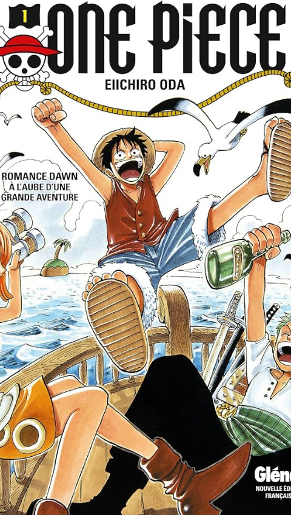

-
One Piece
Fortune, gloire et pouvoir, c’est ce que possédait Gold Roger, le tout puissant roi des pirates, avant de mourir sur l’échafaud. Mais ses dernières paroles ont éveillées bien des convoitises, et lança la fabuleuse « ère de la piraterie ». Bien des années plus tard, Shanks, un redoutable pirate aux cheveux rouges, rencontre Luffy, un jeune garçon dans un petit port. Il veut devenir pirate et le rejoindre, mais Shanks lui répond qu’il est trop jeune. Plus tard, Luffy avalera accidentellement le fruit Gomu Gomu...
Vers le manga
-
Kingdom
Au sein du Royaume de Qin vivent deux orphelins, Hyo et Shin. Au beau milieu des champs de bataille, les deux frères espèrent un jour qu’eux aussi, ils pourront servir leur royaume en combattant aux côtés des soldats qu’ils admirent. Alors qu’un jour, les deux orphelins se trouvent séparés, Shin décide de poursuivre son chemin pour devenir un grand général.
Amazing deal
-
Dreamland
Terrence, un adolescent de 18 ans, est élève en terminale STT au lycée du Mas de Tesse (Jules Guesde).Sa mère est morte dans un incendie alors qu’il n’était âgé que de 7 ans et depuis, il a une peur panique du feu.Mais un soir, alors qu’il rêve de sa mère prisonnière des flammes, il surmonte sa peur en contrôlant le feu.Il rencontre alors un homme mystérieux qui lui annonce qu’il est devenu un Voyageur.Et c’est à partir de cet instant que tous les soirs, lors de son sommeil, il se retrouve transporté...
Get started